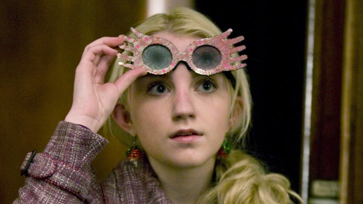
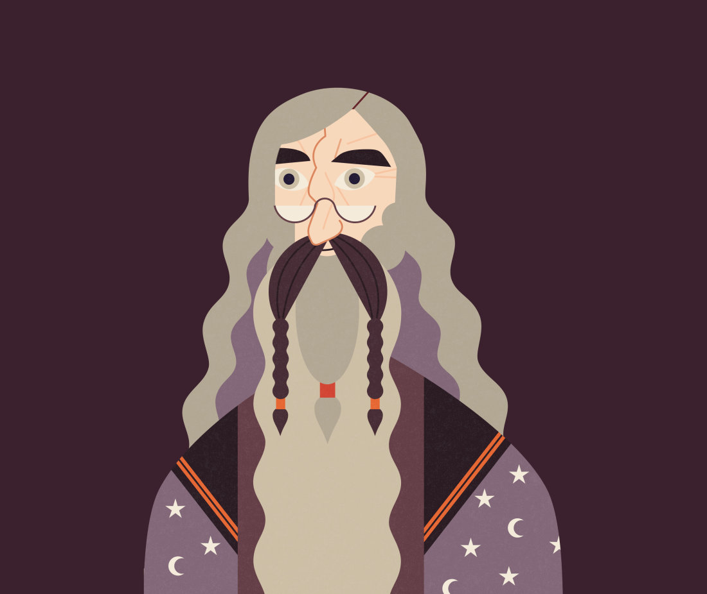

Harry Potter characters who prove you don’t need to worry what other people think
No matter how weird, how different, how odd or how demanding you may be, you are the best possible version of yourself. And this is a truth many Harry Potter characters understood, from those with an unrequited love to ones with an unconventional attitude.

Harry Potter and the Half-Blood Prince
Being different is never easy, no matter whether you’re Muggle or witch or wizard. Hermione endured severe prejudice because her parents were Muggles, Hagrid was constantly mocked for his appearance and Snape was hated and reviled for his actions. Yet each of these characters was so much more than the labels others gave them. They rose above the bias to become someone extraordinary.
Don’t be afraid of your unconventional opinions
Two of the most unconventional characters in the wizarding world were also two of the most interesting — Luna Lovegood and Professor Dumbledore. Luna didn’t give a flying Thestral what other people thought of her. She chased Nargles, believed in conspiracies, said the oddest things and even earned the unfortunate nickname of ‘Loony Lovegood’. Yet Luna’s unconventional way of viewing the world was the reason she became such an invaluable member of the D.A. She saw interesting ways out of complex situations and her resilience to being mocked stood her in good stead when she was captured by Death Eaters.
‘She will,’ said Harry. He could not bear to contemplate the alternative. ‘She’s tough, Luna, much tougher than you’d think. She’s probably teaching all the inmates about Wrackspurts and Nargles.’
Harry Potter and the Deathly Hallows
Illustration of Albus Dumbledore from the first Order of the Phoenix infographic

Professor Dumbledore may not have been as airy as Luna, but his unconventional views were the subject of many stern parental letters and visits from the Ministry of Magic. He rarely explained himself or his actions and his commitment to both Hogwarts and the conquest of Voldemort never wavered. From the moment we met him, Dumbledore’s actions were being questioned – McGonagall asking why Harry was being left with the awful Dursleys – and even after he died, his deeds were hauled out and examined in minute detail thanks to Rita Skeeter. However, at the end, we discover that Dumbledore, like Snape, walked an incredibly complex path of self-sacrifice and hard decision-making. He knew that Harry would have to die, and yet he continued to guide him towards this eventual end. As unconventional as his choice of reading material and sweets (knitting patterns and sherbet lemons), Dumbledore never changed who he was or what he stood for, even when it meant that he would be harshly judged – even by Harry.
Retourner à l'acceuil